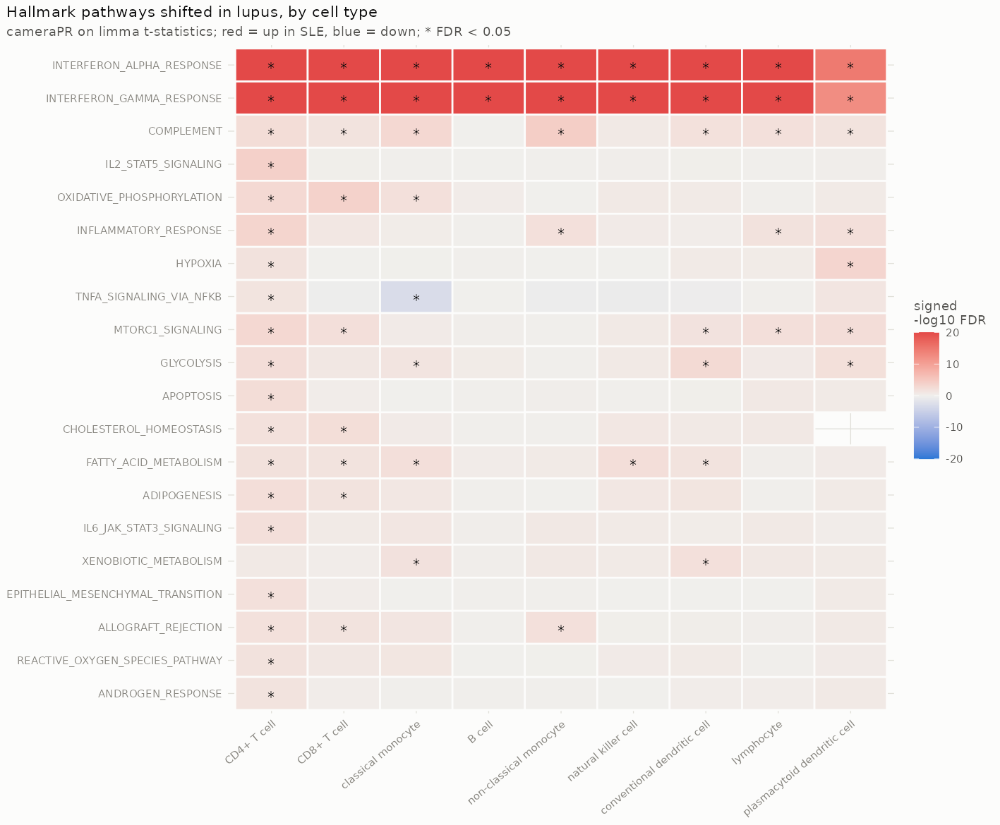

1.26M single cells from 162 lupus patients and 99 healthy donors, with batch, ancestry and 10x library carefully controlled for.
Batch and ancestry alone reach 0.87 pooled, so the pooled 0.99 is inflated. Batch 4 is the only balanced batch (52 lupus vs 44 healthy); there the full model gets 0.92. The covariate model has no bar for the single-batch settings: it cannot be trained when batch is constant. Bars are 95% bootstrap CIs.
Odds ratios for the SLE vs healthy mix of each cell type (limma on the logit scale, all 1.26M cells). Points right of 1 are expanded in lupus blood.
Hallmark pathway enrichment (camera) on pseudobulk limma-voom results. Open the full-size image.

limma-voom with duplicateCorrelation, design ~disease + batch + ancestry. DESeq2 agrees (fold-change correlation 0.86 to 0.97).
| cell type | DE up | DE down | DESeq2 rho | limma also DESeq2 | top up genes |
|---|---|---|---|---|---|
| CD4-positive T cell | 1,515 | 1,562 | 0.97 | 82.1% | PSME2, PSMB9, CIAO2B |
| CD8-positive T cell | 1,234 | 974 | 0.95 | 70.7% | PSME2, PSMB8, GBP1 |
| classical monocyte | 1,392 | 1,697 | 0.95 | 73.8% | NMI, CHMP5, LAP3 |
| B cell | 412 | 422 | 0.91 | 67.5% | SAMD9L, EIF2AK2, PSME2 |
| non-classical monocyte | 562 | 491 | 0.91 | 68.6% | MT2A, CHMP5, GLRX |
| natural killer cell | 326 | 362 | 0.92 | 71.5% | ISG15, PARP9, PSMB9 |
| conventional dendritic cell | 336 | 335 | 0.92 | 68.3% | PSME2, LAP3, MT2A |
| lymphocyte | 72 | 81 | 0.86 | 68.0% | LY6E, BST2, IFI6 |
| plasmacytoid dendritic cell | 103 | 116 | 0.95 | 75.8% | PSMB9, JUN, PLAC8 |